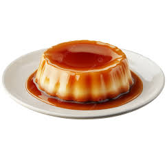

Home
Classic Brazilian Flan

Description
This Brazilian flan, known as Pudim de Leite Condensado, is a smooth,
creamy dessert with a rich caramel topping. It's easy to make and perfect
for special occasions or just a sweet ending to your meal. The texture is
silky, similar to crème caramel, and it melts in your mouth with every
bite.
Ingredients
For the caramel
- 1 cup (200g) of granulated sugar
- 1/3 cup (80ml) of water
For the flan
- 1 can (14 oz / 395g) of sweetened condensed milk
- 2 cups (480ml) of whole milk
- 3 large eggs
Steps
-
Make the Caramel
- In a saucepan over medium heat, combine the sugar and water.
- Stir gently until the sugar dissolves.
-
Stop stirring and let it simmer until it turns a golden amber color.
-
Immediately pour the caramel into a round cake pan or bundt pan
(about 8 inches / 20 cm).
- Tilt the pan to evenly coat the bottom. Set aside.
-
Prepare the Flan Mixture
- Preheat your oven to 350°F (180°C).
-
In a blender, combine the condensed milk, whole milk, and eggs.
- Blend until smooth and fully mixed (about 30 seconds).
-
Bake the Flan
- Pour the flan mixture over the caramel in the pan.
-
Place the flan pan inside a larger baking dish (a water bath or
bain-marie).
-
Fill the larger dish with hot water until it reaches halfway up the
sides of the flan pan.
-
Bake for about 60 minutes, or until the center is set but still
slightly jiggly.
-
Cool and Unmold
- Let the flan cool to room temperature.
- Refrigerate for at least 4 hours (overnight is best).
-
To unmold, run a knife around the edge and invert onto a serving
plate.
Tips
-
🍯 Don’t stir the caramel once it starts boiling — this
helps prevent crystallization and ensures a smooth texture.
-
🥚 Want it firmer? Add one extra egg for a denser, more
sliceable flan.
-
🧊 Let it chill completely: Refrigerating overnight
improves the texture and makes unmolding easier.
-
🔥 Watch the caramel closely: It can go from golden to
burnt in seconds once it starts changing color.
-
🍋 Optional twist: Add a small strip of lemon or orange
peel to the caramel for subtle citrus aroma.